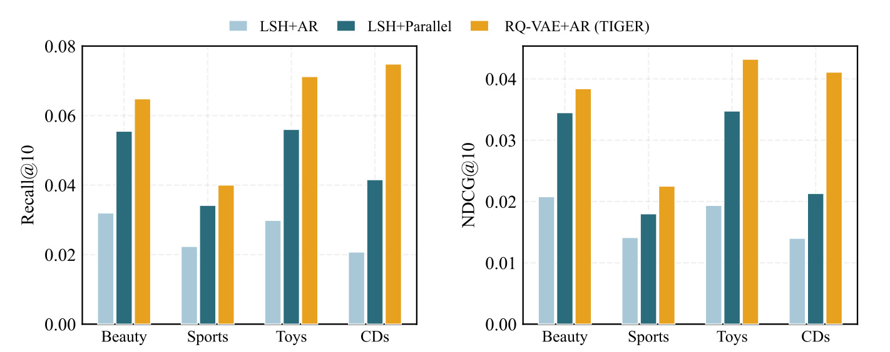
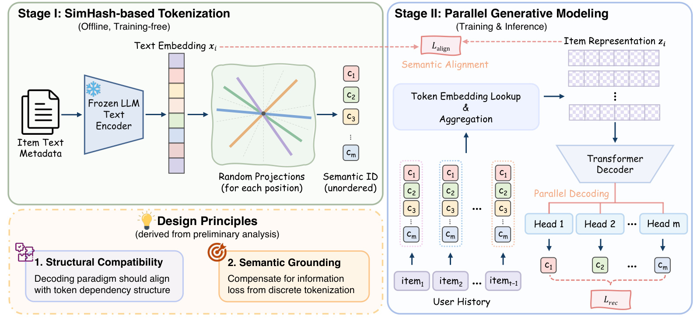
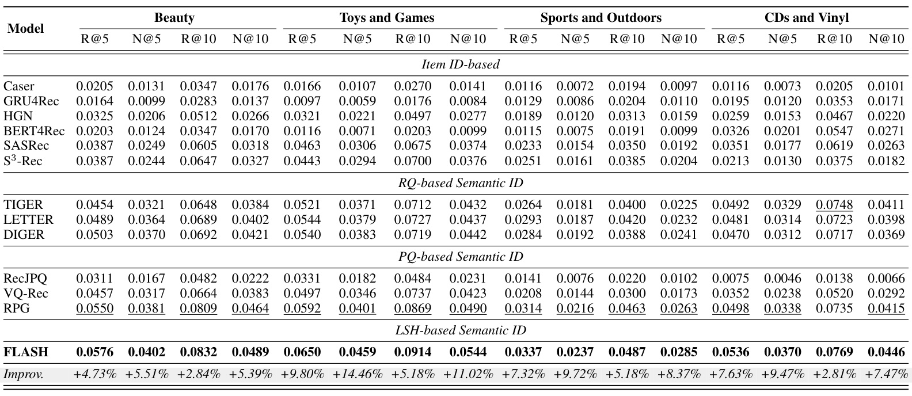
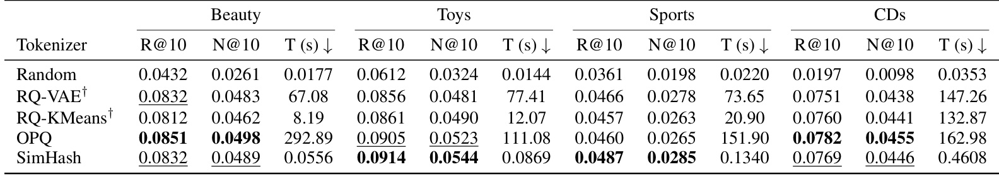
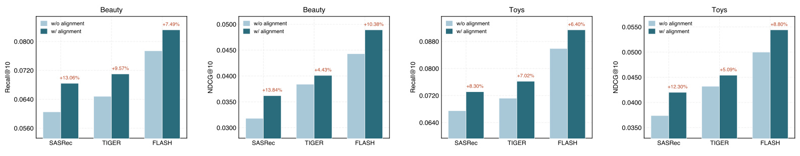
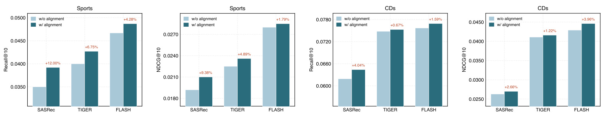
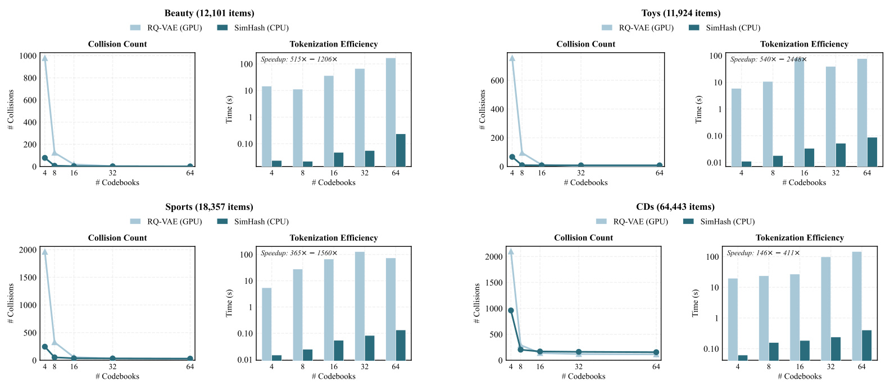
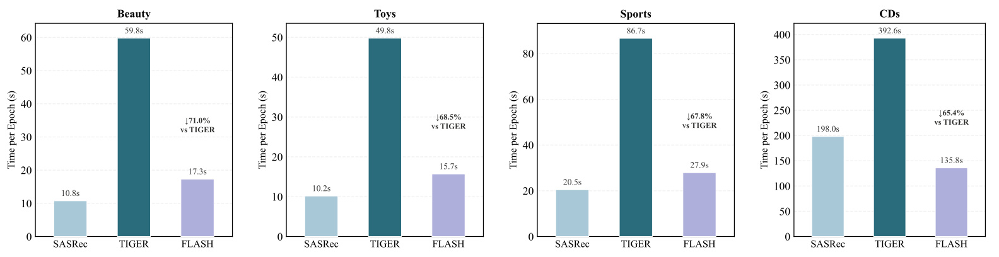
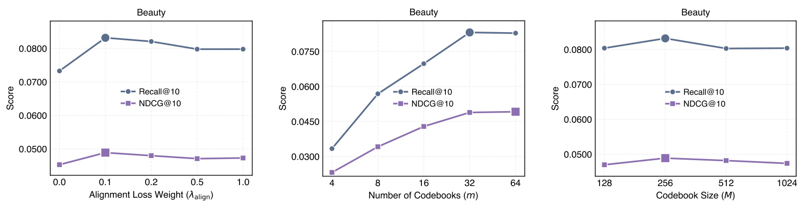
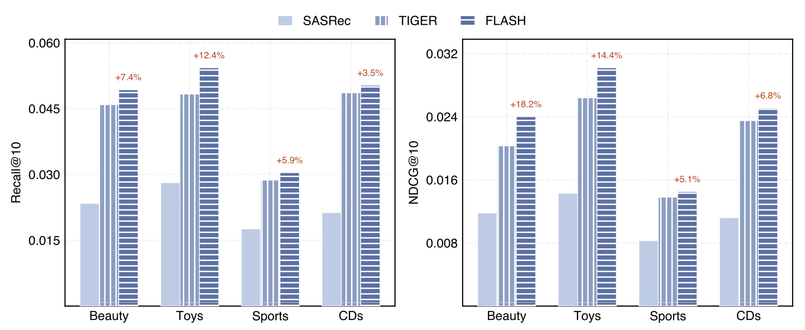

FLASH：用结构兼容的并行解码重新评估 SimHash 语义标识
- 论文：Rethinking Semantic ID Construction for Generative Recommendation: SimHash with Parallel Decoding and Semantic Alignment
- 作者：Yuqing Liu、Huiyuan Chen、Yibo Wang、Wooseong Yang、Philip S. Yu；前两位共同一作。
- 第一作者机构：伊利诺伊大学芝加哥分校；合作机构 Amazon，论文注明 Huiyuan Chen 的工作在加入 Amazon 之前完成。
- 发布时间：2026 年 10 月 5 日 21:15:13 UTC，arXiv v1；北京时间为 10 月 6 日。检索与阅读日期：2026 年 10 月 8 日。
- 论文入口：arXiv:2610.07402。论文首页印有 NeurIPS 2026 标识，本轮不把该页眉单独视为官方录用核验。
- 代码：作者 GitHub 仓库，已核验仓库页面，未运行代码。
1. 背景和问题
简单哈希分词表现不佳，可能来自它与自回归解码的结构不匹配，以及硬离散化造成的信息丢失；只有同时处理这两点，才能公平评估哈希语义标识。
这句话来自论文摘要和引言的问题陈述。FLASH 研究的是序列推荐里的商品标识构造，不是让一个聊天大模型直接生成商品介绍。已知用户按时间排列的交互序列，需要预测下一件商品。传统推荐器给每个商品分配独立标识及可学习嵌入，历史序列编码后，通过向量相似度为商品打分。这样的表征容易吸收交互信号，却不能直接为未出现的商品提供有意义的向量；商品数增加时，独立嵌入表也随之扩大。语义标识方法则从标题、描述、类别等内容中提取向量，把一个商品表示为多个共享码本中的离散符号。用户模型预测这些符号，最后映射回商品。这样相近商品有机会共享部分参数，新商品也能根据内容获得标识。
困难在于，内容向量是连续的，推荐任务需要可计算的离散编码。把向量转换为短标识会牺牲部分细节；编码是否保留足够信息，又取决于下游模型能否利用其结构。残差量化将前一级没有解释的残差交给后一级，因此后面的码带有依赖前面码的含义。TIGER 使用 RQ-VAE 产生这类标识，并逐个生成码位。前缀先预测粗结构，后续码再补充细节，这种编码与自回归解码有自然联系。不过自回归会产生逐位执行和搜索开销，论文指出常见实践因此限制到每个商品四个符号，难以无限增加离散信息容量。
乘积量化的思路不同。它构造多个相对独立的编码分量，RPG 以优化乘积量化形成较长标识，采用并行预测来缓解逐位推理瓶颈。RQ 与 PQ 虽然结构不同，但都需要根据数据训练或拟合量化器。系统维护者因此同时承担内容编码、量化器学习、标识生成和推荐训练。对经常新增商品的场景，量化器更新还可能带来编码版本和推荐参数之间的兼容问题。论文选择更简单的 SimHash，试图检验这些学习过程到底是否必不可少。
SimHash 用随机超平面切分内容空间。一个商品在不同超平面正侧或负侧的符号被组合为整数，这个整数就是某一码位。相近向量更容易得到相同符号，因此保留粗粒度邻近关系；随机投影本身不根据交互或重构目标学习。问题是既有研究将 SimHash 接入自回归模型后发现明显劣势，读者很容易得出“哈希编码能力不足”的结论。FLASH 则指出，哈希各码位独立构造，不存在先粗后细的天然顺序。强迫它们形成逐位条件关系，可能让模型学习一种编码过程没有提供的层级结构。编码器简单和解码器不兼容是两种不同原因，应通过控制实验区分。
引言的初步对照使用相同内容嵌入，在四个 Amazon 类别上比较 LSH 搭配自回归、LSH 搭配并行及 RQ-VAE 搭配自回归。配置遵循 TIGER 默认设置：T5 主干、四个码本、每码本二百五十六种取值、最大历史长度五十。这个对照尚未使用最终方案的长标识规模，所以能先观察解码策略变化是否已产生收益。

Figure 1 的两个面板分别是 Recall@10 和 NDCG@10，四组柱对应 Beauty、Sports、Toys、CDs。LSH 从自回归换成并行后，各组柱均上升，但多数仍低于 RQ-VAE 加自回归的柱。它支撑的论点有两层：既有劣势有一部分可以通过改变解码消除；仅修正这一结构并没有恢复全部细粒度信息。图中不存在“换解码便足够”的结论，剩余差距正是语义对齐模块的动机。与此同时，这只是作者特定设置下的比较，不能从图直接推导所有哈希、所有自回归架构都有相同效果，也不能把结构因子与完整模型容量变化完全等同。
另一个常被忽略的差异是监督来源。RQ-VAE 有连续内容重构目标，会间接约束离散码的语义；随机哈希没有训练目标，所以不会主动告诉后续可学习码嵌入应保留什么。即使码位分布的预测方式合适，推荐损失仍可能只记住训练商品的共现，丢掉最初的内容几何关系。FLASH 增加对齐损失，把输入商品的可学习表征拉向冻结内容向量经过投影后的方向，作为重构之外的语义锚。这形成两项设计原则：编码结构决定适合的解码方式，离散化损失则需要单独的连续语义监督补偿。
这里的“免训练”应严格限定在分词器。商品文本嵌入由 text-embedding-3-large 提取，维度为三千零七十二；这一内容处理存在调用、计算和存储成本，推荐主干、码本嵌入、多头预测器和对齐投影也都要学习。论文既没有免除推荐训练，也没有把全流程耗时降到分词表中列出的零点几秒。文本语义与真实偏好还可能不一致：描述相似的两件商品未必互相替代，有些偏好由价格、曝光或购买阶段决定。对齐权重因此应服务于行为预测，而非完全覆盖行为损失。
还有一个因果边界需要提前说明：同一码位超平面独立采样，并不代表给定用户之后所有目标码的概率独立。用户偏好可能把商品内容的多个属性一起关联起来，例如户外运动器材的类别和材质会共同出现。并行乘积分解是在表达能力与速度之间作出的建模选择；有效目录重新限制可输出商品，则避免把独立头任意组合当作真实商品。应同时观察这种近似是否损失属性间协同，以及扩长码位是否足以补偿。在离线指标接近时，维护成本和新商品接入速度也会影响方案选择，但这些系统收益还需要单独测量。
从研究价值看，这项工作提供一种跨阶段诊断路径。评估离散标识时不只横向比较 tokenizer，还要问下游是否有与其一致的依赖假设、码位长度是否受限、监督是否保留原始内容信息。FLASH 的证据范围是四个公开商品类别及离线序列预测。本笔记把这些证据作为生成式推荐的设计线索，并把工业目录规模、上线收益和多模态内容留作待验证问题。
2. 方法
2.1 SimHash 语义标识构造
完整流程分为两个阶段。第一阶段把静态商品文本转换为固定离散标识；第二阶段学习这些标识的码嵌入，聚合用户历史商品表征，并预测下一件商品的多个码位。冻结文本向量只提供语义参照，不在推荐训练中反向更新。框架图同时画出推荐目标与对齐目标，说明两者约束不同位置：前者监督历史之后的目标商品，后者约束历史输入商品的表征。

Figure 2 左侧先经过冻结文本编码器，再为各位置分别执行随机投影，得到没有天然顺序的语义标识；右侧把历史中每件商品的码嵌入查表并聚合，送入 Transformer，最后由多个预测头同时输出目标码分布。上方红色对齐路径连接内容向量与商品输入表征，并未把未来商品文本作为用户状态直接输入。下方两项原则分别对应并行多头与语义对齐，而非两个额外训练模型。图中的随机投影和可学习嵌入查表必须分开理解：前者固定编码规则，后者根据推荐和对齐目标优化，因此“固定码”仍能获得变化的表示能力。没有逐码反馈箭头也意味着一个预测头不会等待另一个头生成符号；用户历史仍是有时间顺序的，只有同一商品内部码位的解码不按顺序执行。
设商品内容向量为 $x_i\in\mathbb{R}^{d_{text}}$，每个商品用 $m$ 个码位，每位取值属于独立码本 $C_j=\{1,\ldots,M\}$。第 $j$ 位抽取 $B=\lceil\log_2 M\rceil$ 个标准高斯随机超平面 $r_{j,b}$，论文式一为：
每个点积只留下正负号，按二进制权重组合后得到整数。论文限制 $M$ 为二的幂，因此八个符号位可编码二百五十六种值；加一用于与论文的一起始编号一致。各位置使用独立采样的超平面，但同一位置的超平面被所有商品共享并固定。这里的独立是构造过程独立，不能误读为真实数据中的码随机变量必然统计独立：它们都来自同一商品文本，仍可能相关。也不是完全无语义随机赋码，因为投影方向固定，相似文本向量会系统性共享符号。
离散标识扩长可以增加区分能力，减少不同商品被映射为同一完整元组的碰撞；它不能恢复每次符号化已舍弃的连续距离大小。扩长还增加码嵌入参数和候选评分的查表次数。部署时需要固定随机种子及投影矩阵，新增商品用同一规则计算码。若重新抽样，就会改变旧商品码义，已有推荐头和码嵌入也失去对应关系。论文未给出完整线上编码版本治理方案，这属于从方法自然推出的工程检查项。
2.2 码本聚合与并行生成
符号解释：$E^{(j)}$ 表示第 $j$ 个位置的可学习码本，$e_c^{(j)}$ 为它的第 $c$ 行，$d$ 是模型隐藏宽度，$z_i$ 为整件商品聚合后向量。每个位置有独立可学习表 $E^{(j)}\in\mathbb{R}^{M\times d}$。商品不是在独立 item 表中查一行，而是查 $m$ 个共享码向量并聚合：
作者用拼接后线性投影，将 $md$ 维映到 $d$ 维。这保留不同码位的身份及不同贡献，并不要求输入聚合具有严格的置换不变性。“无序”描述的是码位没有残差层级和生成次序，不是交换某两张独立码本而不修改参数仍保持输出完全相同。聚合后的历史 $z_1,\ldots,z_{t-1}$ 输入序列 Transformer，最终状态 $h_{t-1}$ 表示用户下一步预测上下文。
训练时对整个位的码嵌入做 codebook dropout，概率为零点二，保留的部分按比例缩放以保持期望幅度。它不同于随机删除某些商品交互，也不同于逐个隐藏维度的普通 dropout。作用是避免聚合层依赖少数固定位置，迫使多个独立码共同承担信息。推理时不执行随机遮蔽。论文正文没有独立的 dropout 消融，所以其作用是合理设计解释，不能写成已证明多少个百分点的单因子贡献。
并行多头的核心是假设所有码位在同一用户历史条件下进行乘积分解，而不是把前一码作为后一码输入。这里 $h_{t-1}$ 是已编码历史状态，$c_j^{(t)}$ 是目标商品在第 $j$ 位的固定标签，$p_j$ 为该位预测分布；所有头共享同一历史上下文，但每头的输出空间只属于自己的码本。一次预测的含义是消除同一商品内部逐码依赖，并不改变用户序列按时间提供信息的设定：
每个头有轻量 MLP 投影 $f_j$ 和可学习温度 $\tau_j$，它与同位置输入码本共享表，用点积计算各候选码的概率。$c$ 是待评估的码值，分母遍历本位置的全部 $M$ 个候选，$\tau_j$ 调节头输出分布的尖锐程度；$f_j$ 将同一个历史状态映到第 $j$ 个码本的表示空间。即使输入都是同一用户，位置不同的投影和码表仍可输出不同的类别分布：
目标商品的固定码成为监督标签，推荐损失是所有头交叉熵的均值。$\mathcal{L}_{rec}$ 表示推荐损失，$m$ 是参与平均的码位数，取对数的概率必须对应真实目标商品的那一码值。不同头仍需各自获得标签，不能用某个头的类别索引监督所有码本；本式也没有额外引入目标商品独立ID交叉熵。对数概率越大，平均负对数损失越小：
平均而非求和使码位数量变化时损失量级更稳定。共享码表则让输入历史商品和输出目标码在同一位置空间建立联系。模型没有显式学习目标码之间的逐步条件概率，某些相关性可通过共同历史状态间接体现，但乘积分解仍是建模假设，不是由独立超平面推出的概率定理。其收益是一次输出所有头，可以把标识从四位扩展到三十二或六十四位；代价是无法表达任意码位联合分布，因此需要有效目录约束与实际实验验证。
2.3 语义对齐和有效商品评分
对齐把原始冻结内容向量通过可学习线性映射 $\phi:\mathbb{R}^{d_{text}}\to\mathbb{R}^{d}$，然后与输入商品聚合表示计算余弦相似度。论文式六和七为。$S$ 表示历史输入商品的集合或序列位置，$|S|$ 是归一化使用的历史长度，$\phi$ 是参与训练的内容投影，$\lambda_{align}$ 是两个目标之间的权衡系数。由于负余弦可以为负，总训练损失的绝对数值不能直接与只有交叉熵的基线损失比较；判断推荐质量仍应看验证集指标，而不是总损失是否比基线低：
它约束的是每件历史商品的底层表示，不是直接要求最终用户状态匹配目标商品。冻结文本坐标提供语义锚，但投影可学习，所以模型可把高维文本压入行为建模空间；后续 Transformer 仍学习商品之间的时间依赖。余弦主要约束方向，不强迫表征幅度重构内容。由于两个目标共同更新码表与聚合层，对齐可以减少仅凭训练共现的漂移。较大的 $\lambda_{align}$ 也可能过度放大文本相似性，弱化行为信号，这一点在敏感性实验中需要检验。
推理时并不逐头取最大码后生成一个可能不存在的商品，也不枚举 $M^m$ 种元组。先一次计算每个头全部码值的缓存分布。这里 $q^{(j)}$ 是本次用户请求在第 $j$ 个码本上的长度 $M$ 向量，矩阵 $E^{(j)}$ 乘以头表示产生全部候选码的分数，然后归一化。缓存依赖当前用户状态，不能跨不同用户请求当成全局常数；同一请求的所有候选商品才复用这一向量，省去重复算码向量与用户状态的点积：
然后遍历真实候选商品的固定标识，查对应位置概率，求和得到商品评分。$q_{c_j^{(i)}}^{(j)}$ 是商品 $i$ 在该位固定码对应的缓存概率，$N$ 是实际参与打分的商品数。采用对数把连乘变成求和，还能避免很多小概率相乘造成数值下溢；使用有效商品标识表查值保留了目录约束，而不是要求所有预测头最高分码拼接起来必须对应某个商品：
这是对有效商品目录打分，避免独立预测头拼出无效组合。缓存分布计算成本为 $O(mMd)$，真实商品查表相加为 $O(Nm)$，论文给出总成本 $O(mMd+Nm)$，低于逐商品重复向量计算的 $O(Nmd)$。但总成本仍随候选数 $N$ 线性增加，Transformer 历史编码、头投影、内存读写和 top-k 也不因该公式消失。千万级目录能否直接全量评分需要额外吞吐测量；候选过滤或分块可以作为后续工程实验，不能当作本文已给出的工业方案。
同一用户下，各头 softmax 分母对所有商品相同，因此对数分数可用于一致排序；它却不是对有效商品目录重新归一化后的概率分布。两件商品若完整标识碰撞，式九会给出相同分数，本文没有单独展示线上碰撞消歧或校准方案。新商品只需文本嵌入与固定投影获得码，可共享已学码表；这一冷启动路径不需要给新 item 再训练独立向量，但如果它的组合落在训练中很少覆盖的码区域，预测质量仍取决于共享码泛化。训练与推理最重要的差别是对齐损失只在训练施加，服务不需要为了每个候选再运行文本编码器；内容嵌入的离线新增和刷新成本依然存在。
3. 实验结果
3.1 数据与整体效果
四个数据集均来自 Amazon Product Reviews，分别是 Beauty、Toys and Games、Sports and Outdoors、CDs and Vinyl。预处理将评论视为交互并按时间排序，过滤交互少于五次的用户与商品。采用留最后一次协议：用户最后一个商品用于测试，倒数第二个用于验证，余下用于训练。Beauty 有二万二千三百六十三个用户、一万二千一百零一个商品、十九万八千五百零二次交互，平均序列八点八七；Toys 为一万九千四百一十二用户、一万一千九百二十四商品、十六万七千五百九十七交互，平均八点六三；Sports 为三万五千五百九十八用户、一万八千三百五十七商品、二十九万六千三百三十七交互，平均八点三二；CDs 为七万五千二百五十八用户、六万四千四百四十三商品、一百零九万七千五百九十二交互，平均十四点五八。这些是处理后规模，不是原始 Amazon 全量，也明显小于工业内容目录。
实验比较独立 item 标识、残差量化标识及乘积量化标识三类基线，指标为 Recall 和 NDCG，截断位置五和十。前者衡量真实下一件商品是否在前若干名，后者还考虑命中位置。单个留出目标下 NDCG 对更靠前的命中更敏感，因此两个指标差异可以帮助识别排序质量，而不是只有覆盖率。作者主表声明配对 t 检验显著性小于零点零五；本文未独立复现，其重复训练次数、随机种子分布及基线逐项来源需要代码核验。

Table 1 中 FLASH 在所列十六个指标上均为最高。Beauty 的 R@10 为零点零八三二、N@10 为零点零四八九，最强相关基线 RPG 为零点零八零九和零点零四六四。Toys 对应零点零九一四与零点零五四四，RPG 为零点零八六九与零点零四九零，计算相对提升分别为百分之五点一八与百分之十一点零二。Sports 对应零点零四八七和零点零二八五；CDs 对应零点零七六九和零点零四四六。N@5 在四个数据集相对最强基线提升范围为百分之五点五一至十四点四六。这里全部是相对增幅，不能写成十一个百分点；例如 Toys 的 N@10 绝对差是零点零零五四，才除以基线值得到百分之十一点零二。
主表与独立标识方法的差距说明内容组合表示在这些数据上有价值，但不能全部归功于哈希或并行单项。FLASH 同时改变码构造、码长度和对齐监督，且主文明确“大多数基线结果取自 TIGER 和 RPG，剩余从公开代码实现”。这意味着它是作者整理的性能比较，而不是全部方法在同一环境、同一内容嵌入、同一预算下重新训练的统一基准。后文统一下游分词实验对单项问题更有判别力，主表则衡量最终系统组合是否竞争力足够。
3.2 分词结构和语义锚定
作者固定并行下游及语义对齐，把 SimHash 换成随机赋码、RQ-VAE、RQ-KMeans、OPQ，采用各数据集 FLASH 配置。这比不同完整模型直接比较更接近分词差异检验。

Table 2 给出更克制的结论：SimHash 在 Toys 和 Sports 的 R@10、N@10 最好，OPQ 在 Beauty 和 CDs 的对应指标更高。Beauty 中 OPQ 为零点零八五一、零点零四九八，SimHash 为零点零八三二、零点零四八九；CDs 中 OPQ 为零点零七八二、零点零四五五，SimHash 为零点零七六九、零点零四四六。因此“主表全指标最优”不能转述为“任何统一分词比较中哈希都最优”。真正有力的是简单哈希在结构合适并有语义锚定后接近甚至超过学习量化，而没有语义基础的随机码明显差。Toys 随机码 N@10 仅零点零三二四，SimHash 为零点零五四四，表明免训练编码仍需要内容邻近结构。
对齐实验跨越 SASRec、TIGER 与 FLASH。SASRec 没有码本，就直接对齐独立 item 嵌入；TIGER 加线性投影对齐聚合码表示。每种模型自己的有无对齐版本保持主干和训练配置一致，权重在零至一之间调参。这样可以区分“对齐是哈希专属补丁”和“对齐可能是普遍的表示正则”。

Figure 4 显示 Beauty 中对齐使 SASRec、TIGER、FLASH 的 R@10 分别相对提升百分之十三点零六、九点五七、七点四九；FLASH 的 N@10 提升百分之十点三八。Toys 上 FLASH 的 R@10 和 N@10 对应提升百分之六点四零与八点八零。三个架构均受益，说明原始内容向量能够在编码不同的模型里提供额外监督。对齐的改进同时出现在 Recall 与 NDCG，不能只解释成命中靠后位置增加。不过它并没有证明离散化损失被完全恢复，也没有独立测出文本信息量；“补偿信息丢失”是作者依据该控制对照的机制解释。各模型的对齐挂接位置不同，所以跨模型增幅还包含各自表示层对监督的响应。
附录进一步给出 Sports 和 CDs，以检查这个结论是否只由两个小类别支撑。

Figure 8 中 Sports 的 FLASH R@10、N@10 相对提升百分之四点二八与一点七九，CDs 对应一点五九与三点九六。仍然正向，但幅度明显不同；Sports 上 SASRec 的 R@10 提升百分之十二，比 FLASH 大，CDs 上 TIGER 的 R@10 只有百分之零点六七。因此可以说四类别有一致方向，却不宜说所有架构、所有数据都有固定大小的增益。附录单位球面的可视化展示训练后码嵌入结构更有组织，但那是定性观察，不能单独证明变化由对齐造成；定量有无对齐比较才是这里的主要证据。图的纵轴从接近模型分数的非零位置开始，柱高差会被视觉放大；需要读取实际指标及标注相对比例，不能只凭柱形高度判断绝对变化。四个面板共同覆盖两个数据分布和两种排序指标，补足了主文只显示两个类别的证据范围。
3.3 碰撞和计算成本
完整标识碰撞会使不同商品无法被式九区分，增加码位可能缓解这一问题。作者固定码本大小二百五十六，比较不同码位数量下 SimHash 与 RQ-VAE 的碰撞及分词时间。

Figure 3 每个数据集有碰撞和时间两个面板。Beauty 中 SimHash 的碰撞从四码位时七十八降至六十四码位时一个，其他类别也随码位增多迅速降低。它说明小规模公开目录中足够长的随机投影编码可以提供相当的区分能力；并不说明千万级新目录不会出现局部密集语义导致的碰撞。图右侧时间为对数轴，作者标出数百到数千倍比值，但明确 RQ-VAE 在 GPU、SimHash 在 CPU。这样混合硬件的墙钟耗时可反映具体实现的操作成本，不能当作同硬件算法效率的公平倍数，更不能当作整个推荐服务吞吐提升。
Table 2 的 SimHash 四类别分词时间为零点零五五六、零点零八六九、零点一三四零和零点四六零八秒；RQ-VAE 对应六十七点零八、七十七点四一、七十三点六五和一百四十七点二六秒。两种残差方法标有 GPU，OPQ、随机码、SimHash 在 CPU。这个分母没有包含调用 text-embedding-3-large 的文本编码成本，也没有包含序列推荐训练。目录更新时 SimHash 只需执行固定投影，无需量化器拟合，确有维护优势；要给全流程报价，还需分别计内容编码、投影、训练、存储和在线评分。
Stage II 的时间则在同一 A100 八十 GB 上比较，每 epoch 只计推荐模型，语义标识已经构造完成。主配置的码长度不同：TIGER 常为四位，FLASH 允许更长标识。因此此处比较的是实际架构配置成本，不是完全相同参数量的理论证明。

Figure 7 的 FLASH 在 Beauty、Toys、Sports、CDs 上分别为十七点三、十五点七、二十七点九、一百三十五点八秒；TIGER 分别五十九点八、四十九点八、八十六点七、三百九十二点六秒，对应下降百分之七十一、六十八点五、六十七点八、六十五点四。SASRec 前三个类别为十点八、十点二、二十点五秒，比 FLASH 更快；CDs 则为一百九十八秒，比 FLASH 更慢。这一例外提醒读者：附录正文对“相对 SASRec 有适度额外开销”的概括并非四类别均成立。每 epoch 更快还不等于收敛总时间更短，要结合早停轮数、调参次数和内容编码看完整成本。图中的百分数均相对本数据集TIGER的每epoch耗时，不能拿四组比例平均后作为任意目录的服务加速指标。
3.4 超参数与冷启动
作者最多训练三百轮，批量二百五十六，验证集连续二十轮未改善便早停；学习率搜索零点零零一至零点零一。码本数量在四、八、十六、三十二、六十四中搜索，码本大小在一百二十八、二百五十六、五百一十二、一千零二十四中搜索，对齐权重在零到一中选择。FLASH 使用两层、两头 Transformer，前馈维度一千零二十四，隐藏维度四百四十八或八百九十六。

Figure 5 左侧表明适度对齐已带来明显收益，继续放大权重没有持续改善；中间从四码位增加到三十二提升明显，再到六十四趋于饱和；右侧从一百二十八码本容量到二百五十六有小幅改善，再扩大略下降。附录 Figure 10 中其余类别的总体趋势相近，最优点却不同。最优配置 Beauty 为三十二码位、二百五十六码本、四百四十八隐藏维、对齐权重零点一；Toys 为六十四码位、二百五十六码本、四百四十八维、零点二；Sports 为六十四码位、二百五十六码本、八百九十六维、零点二；CDs 为六十四码位、五百一十二码本、四百四十八维、零点一。全部使用零点二的码位 dropout。这反映容量、稀疏程度和语义正则需要共同选择，不能直接把一个类别的配置外推到所有目录。
冷启动从测试序列的目标商品中随机抽取百分之五，删除训练集中所有涉及这些商品的交互，再只评估目标落在该集合的测试序列。SASRec 未见商品的独立嵌入在评估时随机初始化；语义标识模型可以从文本获得新商品表示。

Figure 6 的百分数相对 TIGER 而非 SASRec：四类别 R@10 提升百分之七点四、十二点四、五点九、三点五，N@10 提升十八点二、十四点四、五点一、六点八。它支持固定内容编码与共享码表对未见商品有用，且 FLASH 相对已有语义标识方法仍有优势。但“严格”只明确训练交互不含冷商品，论文没有完整交代冷商品文本是否参与离线量化拟合、对齐训练是否统一排除所有冷商品、随机抽样与 SimHash 投影重复种子多少次、验证集如何处理这些商品。这些协议细节须进一步核验。随机初始化 item 嵌入也会让 SASRec 在该任务中天然吃亏，不能据此否定带内容特征的传统召回。上线冷启动还涉及首次曝光选择、库存和类别漂移，当前离线目标集实验尚未覆盖。
4. 总结
FLASH 的可取之处是把分词器、解码依赖和连续语义监督作为联动设计：SimHash 给出粗语义近邻结构，并行头符合无残差次序的码位构造，对齐目标为可学习表示补上内容参照。它在四个公开类别的最终主表中有竞争力，在统一下游的分词比较里与学习量化接近，在冷启动目标集上也有正向结果。更准确的技术结论是“简单固定编码在兼容解码与语义监督下值得重新评估”，而不是所有学习量化都没有价值。
迁移时首先可做结构与解码的交叉对照：保持内容嵌入、主干和预算固定，比较哈希配并行、哈希配自回归、量化配并行及量化配自回归，并单独改变码长度，观察原有差距究竟来自编码信息还是容量限制。其次可给现有 item 标识或量化模型加底层内容对齐，记录零权重与多个适度权重，按短序列、低频商品、新商品分别评估，确认增益是否集中在稀疏分段。再次可实现每头概率缓存和有效目录查表相加，测量目录扩大时的内存吞吐、候选过滤、top-k 与尾延迟，判断并行码预测能否转换为系统收益。这些是由本文机制推导的实验方向，尚无本轮运行结果。
至少四项限制必须随结论保留。第一，内容编码器的质量和字段完整性直接影响随机哈希，本文主要使用商品文本，稀疏描述、同质模板和缺少图像信息都可能弱化语义。第二，完整码碰撞仍存在，共享所有码位的两件商品不能由当前评分区分；公开目录低碰撞不构成大目录保证。第三，主表部分基线取旧论文数值，分词时间又混合 CPU 与 GPU，因此最优性能和效率倍数不能都解释成同一环境公平复现。第四，缺少工业在线指标、千万级目录测量、冷启动随机种子稳定性和更完整信息可见性协议；公开序列排序无法验证曝光、点击、转化或长期价值。另需注意对齐可能过强，内容相似与行为偏好之间仍需平衡。
后续应优先核验三个可执行问题。其一，在作者仓库确认随机投影种子、商品文本模板、共享码表和 dropout 实现，并逐项追踪主表哪些数值重新训练；其二，把冷商品文本能否参与离线编码拟合明确为可见信息协议，重复多组冷商品集合和投影种子，报告均值与方差；其三，分开测内容嵌入、量化或投影、推荐训练与在线评分，并统一硬件及参数预算。完成这些检查后，再讨论是否将现有语义标识系统改为固定哈希。代码页面核验提供了跟进入口，不能替代真实复现或生产验证。